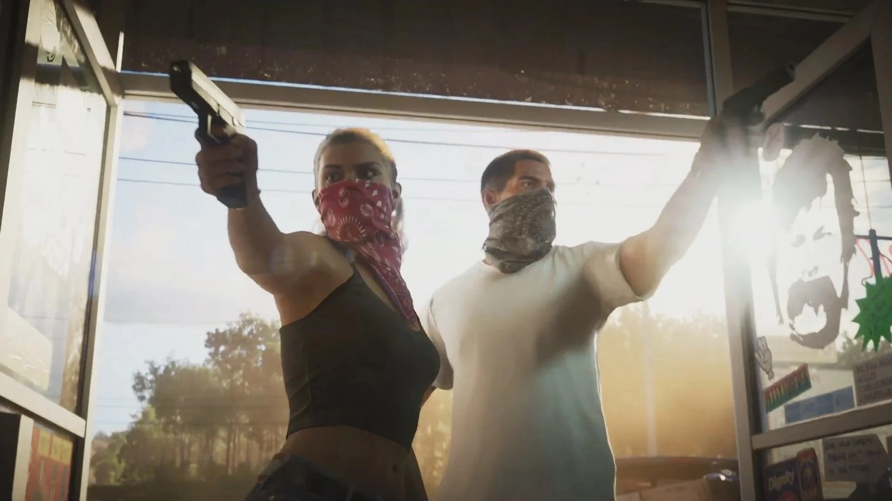

When well release be?
Right now it's scheduled to be released in fall 2025.
Published: October 5, 2024
3 MIN READ

Grand Theft Auto 6 has been in development for nine years, almost ten. Grand Theft Auto 6 has become a sort of a running joke within the gaming community because it has taken so long to come out. Right now it's scheduled to be released in fall 2025. Rockstar Games is known for delays in their video game releases, so most places are saying they could be delayed 2026 that would make it 13 years in between the two games.
Grand Theft Auto 5 is the latest released edition of this game that came out in September 2013 and is beginning to show how outdated it is. Grand Theft Auto 5 taking place in Los Santos based off of Los Angeles California. The Issue in Grand Theft Auto 5 is it's easy to cheat and has a lot of bugs no matter what system you are on. As of now, it's been 11 years without fixes to cheaters and bugs, just cosmetic updates.
The upcoming Grand Theft Auto 6 is scheduled for release in the fall of 2025 for consoles. The current trailer shows it to be set in Vice City based in Florida according to Acer Corner “The Grand Theft Auto 5 map spans 29.28 square miles (75.84 square kilometers), while the new map could reach around 48.26 square miles (125 square kilometers)” (“Bigger, Better, Badder: How the Grand Theft Auto 6 Map Might Redefine GTA History”). There is one main protagonist, maybe two, the main protagonist named Lucia and the possible other main character being called Jason.
Rockstar has been working on Grand Theft Auto 6 since 2014. A hacker named Arion Kurtaj leaked 90 clips of the unreleased and hugely anticipated Grand Theft Auto 6 using just an Amazon Firestick, mobile phone, and hotel TV in 2022. Some people think Grand Theft Auto 6 has been delayed because of Red Dead Redemption 2 which started being worked on shortly following the release of the original Red Dead Redemption being released in 2010. This and Grand Theft Auto 5 are being updated consistently with cosmetic and events delayed Grand Theft Auto 6.
In conclusion, the gaming world is excited, overall, about the upcoming release of the game in 2025. Reviews of the game-released trailers have been mainly positive. The new version of Grand Theft Auto 6 has been coming into the gaming world for a long time after 12 years of waiting. Let’s hope that the latest version of the game is worth the wait.
Right now it's scheduled to be released in fall 2025.
The current trailer shows it to be set in Vice City based in Florida.
They are gonna release it for consoles then a few months later release for PC.